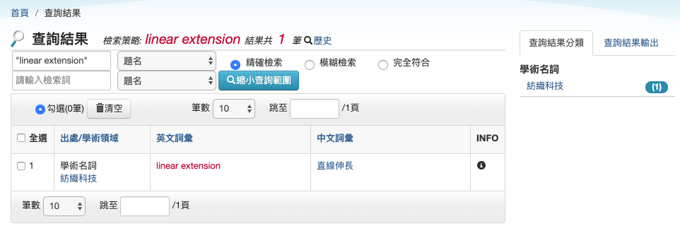

偏序集排序（二）
對於一個偏序集 \(P\)，我們可以利用動態規劃的方法，找出從 \(P\) 的狀態開始排序，到完整排序時，最壞情形下，至少需要幾次比較。 可惜的是，這個方法需要跑遍所有可能的 \(n\) 個點的偏序集，而這個數量是隨著 \(n\) 越大而呈現指數級別成長的1。
線性延伸 Linear Extensions
有沒有更有效的方法來提早排除某些「需要太多次比較」的偏序集呢？ 其實是可以的，給定一個偏序集 \(P\)，對於任何一個所有資料 \(x_1, x_2, \ldots, x_n\) 的全排列 \(\sigma\)，我們說 \(\sigma\) 是 \(P\) 的一個線性延伸（Linear Extension），若且唯若對於任兩筆資料 \(x_i\) 與 \(x_j\)，一旦在 \(P\) 上面 \(x_i < x_j\) \(\implies\) 在 \(\sigma\) 之中 \(x_i\) 出現在 \(x_j\) 前面。 如果我們用圖論的語言來描述的話，其實滿足條件的 \(\sigma\) 就會是 \(P\) 所對應的有向無環圖 \(G_P\) 上頭的一個拓撲排序。
我們用 \(e(P)\) 來表示偏序集上面的線性延伸數量，當我們寫成 \(e(G)\) 的時候，也代表著一個有向圖 \(G\) 中拓撲排序的方法數。兩者定義雖然不太一樣，在這裡我們不妨就混著使用了。 舉例而言，如果 \(P_{\rm{total}}\) 是一個全序集，那麼它有唯一的線性延伸，因此 \(e(P_{\rm{total}}) = 1\)。如果 \(P_\emptyset\) 是空序集，那麼任何一個排列都會是 \(P_\emptyset\) 的線性延伸，此時 \(e(P_\emptyset) = n!\)。
還記得資訊理論給出的複雜度下界嗎？同樣的方法在這邊也適用！
性質 23
對於一個偏序集 \(P\)，進行兩兩比較方式排序，至少需要 \(\ceil{\log e(P)}\) 次比較。
排序效率 Efficiency
從一個 \(n\) 個點的偏序集 \(P\) 開始，假設我們把 \(x_i\) 與 \(x_j\) 拿來互相比較，比完以後會得到 \(P_< := P(x_i < x_j)\)、或是 \(P_> := P(x_i > x_j)\) 這兩種可能。 顯然對於所有 \(P\) 的線性延伸，都會恰好是 \(P_<\) 或 \(P_>\) 的線性延伸，於是我們有 \[ \label{eq} e(P) = e(P_<) + e(P_>)\text{。} \tag{*} \]
如果 \(e(P_<) \neq e(P_>)\)，那麼邪惡的生測資者會設計測試資料，讓你落入線性延伸數量比較大的那種情形，然後你就會「讓剛才花費的 1 次比較，得不到 1 bit 的資訊量」。換句話說，我們想像中可能會出現「效率流失」的情形。 Knuth 的書中2寫道：黃光明教授(Frank Hwang) 與林甡(Shen Lin) 定義了排序效率（Efficiency）：假設從一個空序集經過了 \(k\) 次詢問後，得到一個偏序集 \(P\)。那麼我們定義其排序效率 Efficiency 為 \[ E(P) = \frac{n!}{2^k e(P)} \] 這個式子可以解釋為：理論上經過 \(k\) 次比較，我們應該要能將 \(n!\) 種排序可能縮小至 \(1/2^k\) 倍數，但事實上剩存的排列數 \(e(P)\) 可能仍然比 \(n!/2^k\) 來得大。我們就用這個數值來量化到底到目前為止的 \(k\) 次比較有沒有效率。
從上面打星號的 \(\eqref{eq}\) 來看，我們知道經過一次比較後，比較糟的那個情形，其排序效率不超過當前的排序效率： \[ E(P) \ge \min\{ E(P_>), E(P_<) \} \]
這個定義可以怎麼幫助我們理解排序呢？假設我們的目標，是要在 \(7\) 次比較之內，排列 \(n=5\) 筆資料。此時我們可以事先估計在 \(7\) 次比較之後，得到全序集當下的排序效率： \[ E(P_{\rm{total}}) = 5!/2^7 = 120/128 = 15/16\text{。} \] 這告訴我們什麼？在任何的情況下，我們不應該讓排序效率降低至 \(<\frac{15}{16}\)。換句話說，在選擇下一個要拿來比較的 \(x_i, x_j\) 的時候，我們只需要考慮那些「得出排序結果後，效率仍保持在 \(\ge 15/16\) 的那些 \((x_i, x_j)\) 配對」。
如果不存在這樣的配對，我們便證明了不存在任何基於比較的排序法，能夠在 \(7\) 次之內完成排序。（事實上可以做到 \(7\) 次比較，請參考前幾日的最少比較排序）
這個工具可以幫助我們排除 \(n=12\) 的時候需要進行的動態規劃狀態數！ 根據 Knuth 書中的解釋，經過一連串更深入的分析──我們需要兩件事情： 一、只需要考慮所有連通的、不超過 \(n=12\) 個點的圖 \(G\)，然後每一次比較要嘛在圖上加一條邊、要嘛把兩個圖用一條邊合併起來。二、找到一個方式估計出 \(e(P)\) 的值（顯然無法有效率地直接計算它），其排除效率小於 \(12!/2^{29} \approx 0.89221\) 的偏序集就可以從昨天提到的 1104891746 降到 1649 了！
(tl; dr) 最後的結論就是，在展開所有排序效率 \(\ge 0.89221\) 的搜索狀態時，我們始終無法達到全序集。因此可以證得 \(S(12) > 29\)，由 Ford-Johnson 演算法可得知 \(F(12)=30\)。因此得證 \(S(12)=30\)。
如果給定了偏序集 \(P\)，雖然無法精準計算出所有的線性延伸數量 \(e(P)\)，我們有沒有其他方式來得出 \(e(P)\) 的估計呢？
備註
Linear Extension 在紡織科學裡面會被翻譯成直線伸長唷…

延伸閱讀
可以用 \(n\) 個點的無標號、無方向但有根樹來作下界估計，根據 OEIS A000081，這個數字至少是 \(0.440\times 2.956^{n} \times n^{-5/2}\)，成長迅速。
Donald Knuth, The Art of Computer Programming, Volumn 3, Page 188-190.